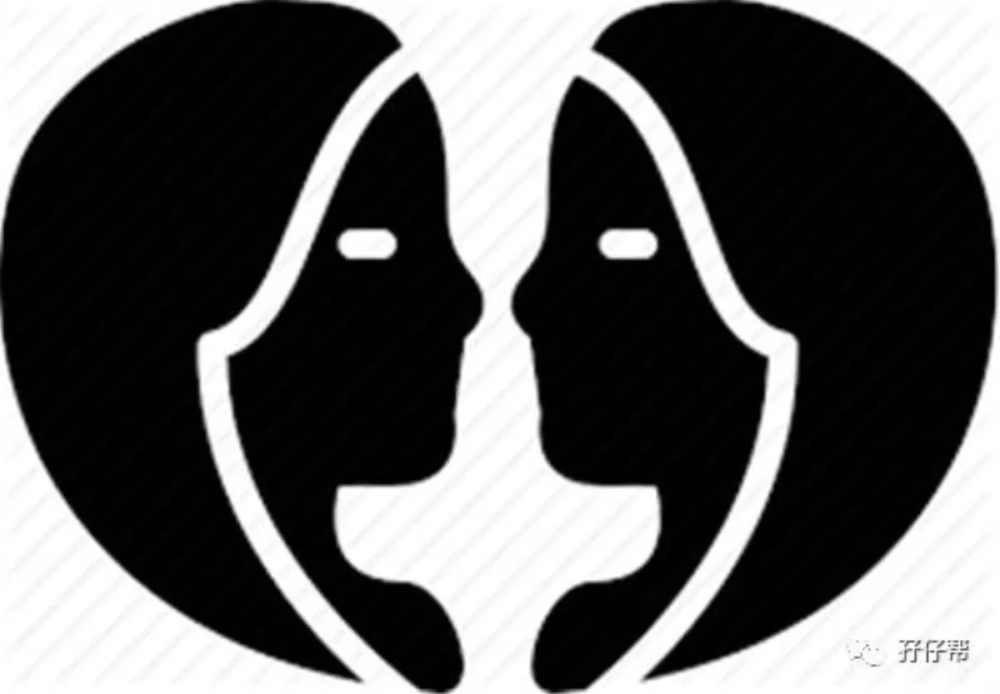
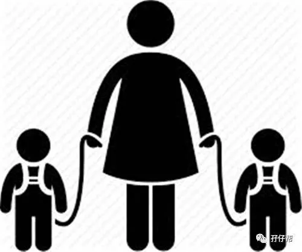
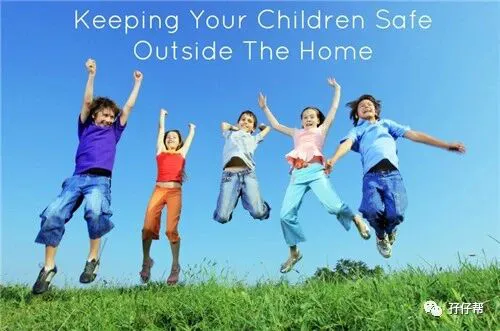

1
上午收到知乎的问题邀请，让评价下关于双胞胎姐妹花走失的事件。因为当时正忙于其他事情，还没来得及回答，晚上下班的时候，看新闻才知道，两个双胞胎姐妹已经找到但双双遇难。
痛心！惋惜！难受！
看照片上两个姐妹花多可爱啊，成绩优异还是班干部，大好的前程正等待着她们。才8岁，正是天真烂漫无忧无虑的时候，可是却被无情的大海吞没了。
养一对双胞胎有多么不容易啊。这8年来，这位妈妈和家人付出了多少心血，操碎了多少心，才把孩子养那么大。
这其中的艰辛，恐怕只有我们这些家有双胞胎的家庭才深刻体会到。
很多人都在谴责孩子的妈妈，孖仔帮双胞胎妈妈交流群里也是纷纷讨伐这位妈妈，没有尽到作为监护人应尽的职责。
而我此刻只想抱抱这位可怜的双胎妈妈。哭吧！女人！
我也是个双胎妈妈，我也经常一边看手机一边看孩子，我相信几乎每一个父母都有这个习惯，或轻或重，或多或少。只是我们很幸运没有遇到那些“小概率事件”的天灾人祸。
面对亲骨肉的离去，这个世界上没有谁会比这位妈妈更痛苦。
如果让她用生命换回两个孩子，我猜她一定百分百愿意。
然而，可怜之人必有可恨之处。
如果这位妈妈没有放松警惕，没有看手机刷朋友圈，
如果景区在安全设施方面再严格加强点，
如果两姐妹花没有远离妈妈的视线，
此刻她们母女三会不会已经在北京的家里，一家团聚欣赏着旅行的美照呢？
但是生命只有一次，而人生也不允许“如果”！
2
我经常和圆圈爸带着圆圈兄弟外出游玩，其实很多安全问题，我们也会经常忽略掉，现在想想都感觉背脊一阵子发凉！
比如上次在张家界森林公园，我只顾着拍照，看见美景忘乎所以，须知道，围栏外就是万丈深渊啊。要是圆圈贪玩爬出了围栏，要是哪个冒失鬼不小心把他们挤出了围栏之外…
比如上次在巽寮湾度假酒店，我居然把他们独自留在岸边，自己跑游泳池去玩水，全然不顾他们的安危，要是他们走到了深水区，要是他们被人贩子骗走了，要是他们…
比如上次在大梅沙海滨浴场，我只顾着拍靓照发朋友圈，完全任由圆圈在沙滩上疯跑，要是他们不小心就跑到了海边，正好一股巨浪袭来…
嗯，原来我也是那个该下地狱，不配当人母的妈妈。
这些所谓的“小概率事件”，看似只有万分之一的可能性，但是一旦发生在自己身上，这百分之百的后果，孩子失去了生命，谁能承受得了呢？
当悲剧发生的时候，与其抱怨社会，怨天怨地，作为父母，我们不如好好反思下有没有努力尽到保护他们的安全。
圆圈妈的经验分享
双胞胎出行，永远是双胎家庭的第一号头等大事。除了照顾他们的吃喝，更重要的是安全问题。经过多次带圆圈出去的经验，在此总结出带双胞胎外出关于安全方面的一些注意事项.
平时要对孩子进行安全教育
圆圈2岁半的时候，我买了相关的安全教育绘本，如《儿童自救宝典》
每天晚上睡前给他们读几遍，不能在河边逗留戏水，不能横穿马路，不能…讲完之后，还让兄弟俩抢答可以做什么，不可以做什么（双胞胎的好处之一：抢答）
熄灯之后，还要用自问自答的形式在他们耳边强行灌输这些安全意识。我不确定他们吸收了多少，但是随着他们的成长，我发现圆圈即使再顽皮捣蛋，只要我用一种危险性的语气发号施令，他们就马上GET到并停止！
已经8岁的双胞胎姐妹如果有很强的安全意识，即使太贪玩也应该知道没有大人的陪同是万不可以独自下海玩水的！
不去危险未开放的景区
我很怕死！自从当妈之后，我倍加珍惜我活在这世上的每一分每一秒。哪怕我是佛系妈妈的典型代表，我也觉得世上只有妈妈才会无底线爱自己的孩子，因此我要活着！
因此，每次我和圆圈爸带哥俩出门游玩，我们都严格贯彻落实“安全第一，享受第二”的方针政策，出发前查旅行攻略，一旦发现目的地有潜在危险或不适合带孩子游玩的，一概不去。
比如，圆圈妈很喜欢玩徒步穿越，但是不适合带孩子去，这个计划虽然每天都把我刺激得心痒痒，但是为了安全起见，还是等圆圈长大之后再去实现吧！
与队友确定责任义务
这个队友指的是，跟你一起外出照顾双胞胎孩子的人，可以是孩子的爸爸，孩子的爷爷奶奶等。不管是谁，请一定跟对方商量好，确定好要负责的事项。
我和圆圈爸，每次出门都落实好责任义务，谁看住圈圈，谁看住圆圆，确保圆圈兄弟必须在其中一人的视线范围内。
比如，我要上厕所，那我去之前一定要确保我负责的圈圈已经交到圆圈爸的手上了，确定圈圈是安全的，我才能离开。
除此之外，与队友互相监督互相提醒对方，不打瞌睡，不玩手机，不看美女帅哥，坚决一心一意为两祖宗服务！
要让孩子保持在视线范围
我最不喜欢带圆圈去游乐场，因为我随时都会被圆圈牵着鼻子走。太多新奇好玩的东西了，他们实在无暇顾及，一会儿玩这个，一会玩那个，根本静不下心玩！
无奈，我只能随着他们走到哪跟到哪。
游乐场这么多孩子， 别说暂时看下手机或者打下盹了，就是这样一直盯着他们，我要是稍微恍惚下，分分钟都会认错走神。
我不敢想象，如果我稍微一个眼神没跟上他们的身影，把他们跟丢了，我真的没有信心把他们找回来。
我怕！我真的很怕！
即便真的要我这样龟孙子似的被牵着跑，也好过我像个疯婆子一样撕心裂肺到处找孩子。
并不是越多人照顾越好
有宝妈觉得人多力量大，带着孩子外出，呼啦一群人出动，以为人多孩子会照顾得更好！
非也！
带双胞胎外出，并非越多人越好，反而因为人越多越添乱。
大家会觉得孩子有对方在看着，自然就放松警惕，殊不知大家都有这种心态。
结果，孩子就在大人的自以为是中走丢了！
这就是为什么带着圆圈爷爷奶奶一起出门，我更加累的原因。第一，不指望老人家帮忙看住孩子。第二，除了要照顾两小的，还要照顾两老感受。
我更愿意和圆圈爸带着双胞胎哥俩出去玩，虽然我既要带着行李又要看着孩子，但是我非常乐意这样的安排。我们两分工明确，目标一致，我只需要看着我手上的这只孩子，偶尔看看圆圈爸手上的另一只，只要都在！我就放心！
最后，绝招！
双胎妈妈，请用你女人独特的第六感以及作为母亲的本能，在你们的所到之处，第一时间把所有危险的东西扼杀在摇篮中，给孩子们提前划定出一个安全的区域范围，并严格落到实处，为孩子的安全出行保驾护航。
切记！不管你的双胞胎孩子，是襁褓中的小婴儿还是掉皮捣蛋的trouble two,亦或是学龄儿童，
任何时候都不要放开孩子的手！
任何时候都不要让孩子离开视线范围！
任何时候都不要麻痹大意！
因为，
毕竟，我们都无法经历失去！
毕竟，失去的感觉无人能承受得起！
毕竟，生命大过天！
希望双胞胎姐妹溺亡的警钟长鸣，让麻痹大意的父母尽快元神归位，尽好为人父母应尽的职责。
愿葬身大海的双胞胎姐妹俩，在天堂快乐无忧地生活着！
END


